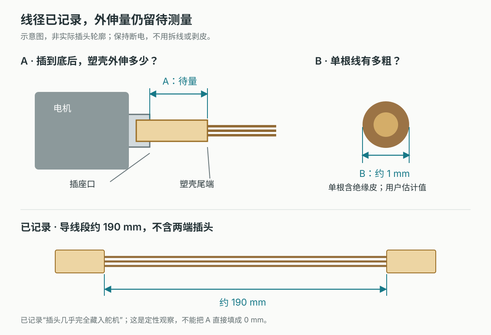
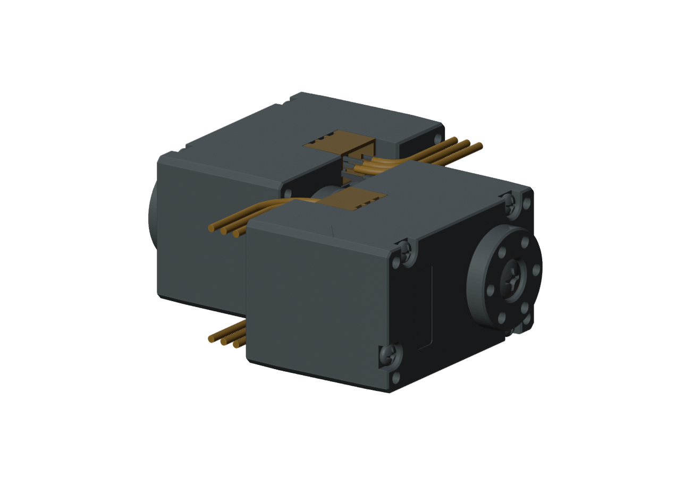
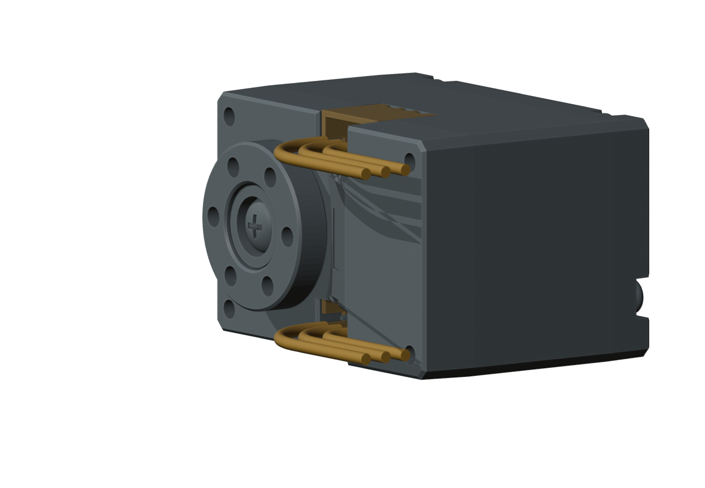

S288 导线记录与插头空间
2026-10-13 · 基准 M1.58 · 独立检查，主模型未改
导线段约 190 mm；三根线，单根外径约 1 mm。
均为用户提供的约值，长度不含两端插头。插头“几乎完全藏入舵机”已记录，具体外伸量仍未知。
实物信息与待补尺寸
B 已按约 1 mm 记录；A 暂保留“几乎全部藏入”的观察，等后续试配再补具体毫米值。

目前能判断什么
| 项目 | 检查结果 |
|---|---|
| 插头空间 | 对比了 JST PHR-3 目录外包框。在口外偏移位置有空间，但它是否匹配随货插头、是否对应真实插到底的位置，仍未确定。保守外包框碰到插座边缘不能直接等同于真实塑壳碰撞。 |
| 线尾转弯 | 按约 1 mm 线径补查了 288 个局部形状，其中 56 个无实体相交。下面展示的一组为左电机向机身前方、右电机向后方；外伸 1 mm、直尾 1 mm 仍是假设值。 |
| 整条约 190 mm 导线 | 长度及单线外径约值已记录。完整路线、余线收纳、固定、插拔和带线装配仍未完成。 |


查看采样结果与来源
收到约 1 mm 线径后的补充系列 56/288 个无交叠。初轮口外塑壳位置 8/60 个无交叠；初轮 1.5 mm 容量系列局部转弯 4/448 个无交叠；对通过的线尾增加 0.1 / 0.2 mm 径向包络，8/8 个仍无交叠。有限采样不排除其他路线，也不证明真实插头、弯折寿命和带线装配通过。
JST 目录 PHR-3：7.8 × 4.5 × 6.85 mm，针距 2 mm。仅作对比，未选为 S288 配套插头。官方目录本地存档 （原研究引用，未收录于本快照） · 第 3 页 · 官方来源。

原始检查 JSON · 来源及假设 · 实际命令及日志 · 26 文件保护检查 · 局部检查 Blender（非主模型） （原研究引用，未收录于本快照）
PROTOTYPE / UNVALIDATED。实际线束 BLOCKED；实物 NOT_TESTED。主模型、STL 和视频未因本研究更新。